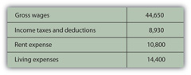
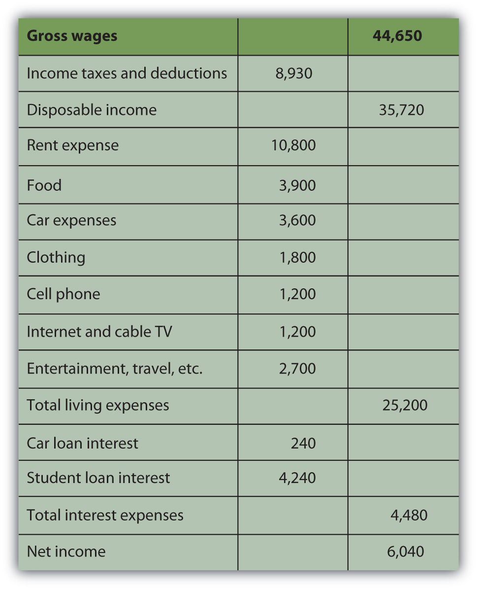
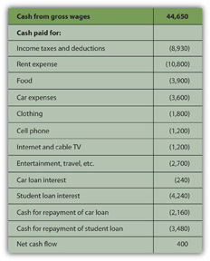
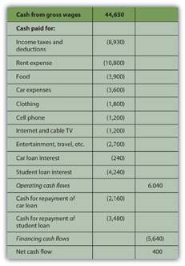
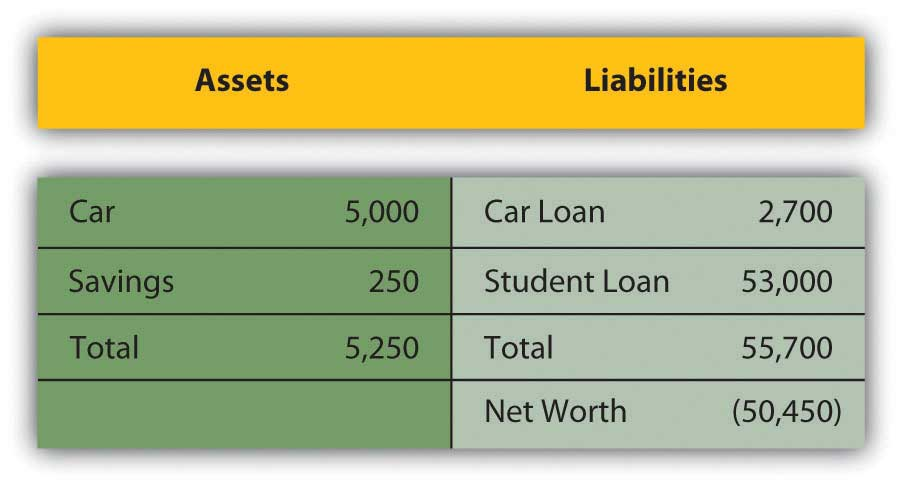
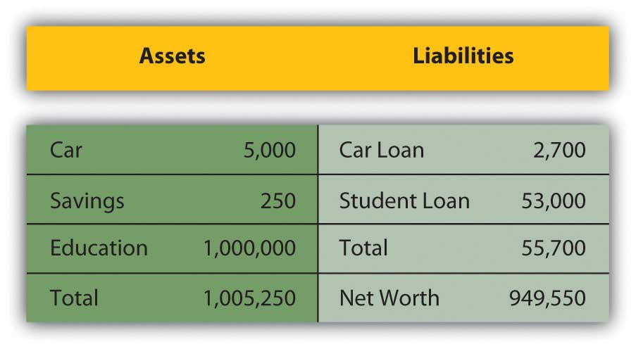

Clay tablets interested Sumerian traders because the records gave them a way to see their financial situation and to use that insight to measure progress and plan for the future. The method of accounting universally used in business today is known as accrual accountingA method of accounting in which economic consequences rather than cash flow consequences define transactions., in which events are accounted for even if cash does not change hands. That is, transactions are recorded at the time they occur rather than when payment is actually made or received. Anticipated or preceding payments and receipts (cash flows) are recorded as accrued or deferred. Accrual accounting is the opposite of cash accountingA method of accounting in which cash flow consequences rather than economic consequences define transactions. Events are defined as cash transactions and recorded only when cash changes hands., in which transactions are recognized only when cash is exchanged.
Accrual accounting defines earning as an economic event signified by an exchange of goods rather than by an exchange of cash. In this way, accrual accounting allows for the separation in time of the exchange of goods and the exchange of cash. A transaction can be completed over time and distance, which allows for extended—and extensive—trade. Another advantage of accrual accounting is that it gives a business a more accurate picture of its present situation in reality.
Modern accounting techniques developed during the European Age of Discovery, which was motivated by ever-expanding trade. Both the principles and the methods of modern accrual accounting were first published in a text by Luca Pacioli in 1494,Luca Pacioli, Summa de arithmetica, geometria, proportioni et proportionalita (Venice: Luca Pacioli, 1494). For more information on Pacioli, see http://en.wikipedia.org/wiki/Luca_Pacioli (accessed November 23, 2009). although they were probably developed even before that. These methods of “keeping the books” can be applied to personal finance today as they were to trading in the age of long voyages for pepper and cloves, and with equally valuable results.
Nevertheless, in personal finance it almost always makes more sense to use cash accounting, to define and account for events when the cash changes hands. So in personal finance, incomes and expenses are noted when the cash is received or paid, or when the cash flows.
Financial decisions result in transactions, actual trades that buy or sell, invest or borrow. In the market economy, something is given up in order to get something, so each trade involves at least one thing given up and one thing gotten—two things flowing in at least two directions. The process of accounting records these transactions and records what has been gotten and what has been given up to get it, what flows in and what flows out.
In business, accounting journals and ledgers are set up to record transactions as they happen. In personal finance, a checkbook records most transactions, with statements from banks or investment accounts providing records of the rest. Periodically, the transaction information is summarized in financial statements so it can be read most efficiently.
Bookkeeping—the process of recording what and how and by how much a transaction affects the financial situation—is how events are recorded. Since the advent of accounting software, bookkeeping, like long division and spelling, has become somewhat obsolete, although human judgment is still required. What is more interesting and useful are the summary reports that can be produced once all this information is recorded: the income statement, cash flow statement, and balance sheet.
The income statementA summary statement of income and expenses for a period; an income statement shows the difference between them or the net profit (net loss) for the period. summarizes incomes and expenses for a period of time. In business, income is the value of whatever is sold, expenses are the costs of earning that income, and the difference is profit. In personal finance, income is what is earned as wages or salary and as interest or dividends, and expenses are the costs of things consumed in the course of daily living: the costs of sustaining you while you earn income. Thus, the income statement is a measure of what you have earned and what your cost of living was while earning it. The difference is personal profit, which, if accumulated as investment, becomes your wealth.
The income statement clearly shows the relative size of your income and expenses. If income is greater than expenses, there is a surplus, and that surplus can be used to save or to spend more (and create more expenses). If income is less than expenses, then there is a deficit that must be addressed. If the deficit continues, it creates debts—unpaid bills—that must eventually be paid. Over the long term, a deficit is not a viable scenario.
The income statement can be useful for its level of detail too. You can see which of your expenses consumes the greatest portion of your income or which expense has the greatest or least effect on your bottom line. If you want to reduce expenses, you can see which would have the greatest impact or would free up more income if you reduced it. If you want to increase income, you can see how much more that would buy you in terms of your expenses (Figure 3.3 "Alice’s Situation (in Dollars)"). For example, consider Alice’s situation per year.
Figure 3.3 Alice’s Situation (in Dollars)
She also had car payments of $2,400 and student loan payments of $7,720. Each loan payment actually covers the interest expense and partial repayment of the loan. The interest is an expense representing the cost of borrowing, and thus of having, the car and the education. The repayment of the loan is not an expense, however, but is just giving back something that was borrowed. In this case, the loan payments break down as follows (Figure 3.4 "Alice’s Loan Payments (Annually)").
Figure 3.4 Alice’s Loan Payments (Annually)

Breaking down Alice’s living expenses in more detail and adding in her interest expenses, Alice’s income statement would look like this (Figure 3.5 "Alice’s Income Statement for the Year 2009").
Figure 3.5 Alice’s Income Statement for the Year 2009
Alice’s disposable incomeIncome available for expenses after tax expense has been deducted; gross income less income tax., or income to meet expenses after taxes have been accounted for, is $35,720. Alice’s net ncome, or net earnings or personal profit, is the remaining income after all other expenses have been deducted, in this case $6,040.
Now Alice has a much clearer view of what’s going on in her financial life. She can see, for example, that living expenses take the biggest bite out of her income and that rent is the biggest single expense. If she wanted to decrease expenses, finding a place to live with a cheaper rent will make the most impact on her bottom line. Or perhaps it would make more sense to make many small changes rather than one large change, to cut back on several other expenses. She could begin by cutting back on the expense items that she feels are least necessary or that she could most easily live without. Perhaps she could do with less entertainment or clothing or travel, for example. Whatever choices she subsequently made would be reflected in her income statement. The value of the income statement is in presenting income and expenses in detail for a particular period of time.
The cash flow statementA summary of actual cash flows for a period, detailing the sources and uses of cash and classifying them as from operating, investing, or financing activities. shows how much cash came in and where it came from, and how much cash went out and where it went over a period of time. This differs from the income statement because it may include cash flows that are not from income and expenses. Examples of such cash flows would be receiving repayment of money that you loaned, repaying money that you borrowed, or using money in exchanges such as buying or selling an asset.
The cash flow statement is important because it can show how well you do at creating liquidity, as well as your net income. Liquidity is nearness to cash, and liquidity has value. An excess of liquidity can be sold or lent, creating additional income. A lack of liquidity must be addressed by buying it or borrowing, creating additional expense.
Looking at Alice’s situation, she has two loan repayments that are not expenses and so are not included on her income statement. These payments reduce her liquidity, however, making it harder for her to create excess cash. Her cash flow statement looks like this (Figure 3.6 "Alice’s Cash Flow Statement for the Year 2009").
Figure 3.6 Alice’s Cash Flow Statement for the Year 2009
Note: On a cash flow statement, negative and positive numbers indicate direction of flow. A negative number is cash flowing out, and a positive number is cash flowing in. Conventionally, negative numbers are in parentheses.
As with the income statement, the cash flow statement is more useful if there are subtotals for the different kinds of cash flows, as defined by their sources and uses. The cash flows from income and expenses are operating cash flowsRecurring cash flows that result from income and expense events., or cash flows that are a consequence of earning income or paying for the costs of earning income. The loan repayments are cash flows from financingNonrecurring cash flows that result from the borrowing or repayment of debt, or from the issue or repurchase of equity. assets or investments that will increase income. In this case, cash flows from financing include repayments on the car and the education. Although Alice doesn’t have any in this example, there could also be cash flows from investingNonrecurring cash flows that result from buying or selling assets., from buying or selling assets. Free cash flowIncome remaining after the deduction of living expenses and debt obligations that is available for capital expenditures or investment. is the cash available to make investments or financing decisions after taking care of operations and debt obligations. It is calculated as cash flow from operations less debt repayments.
The most significant difference between the three categories of cash flows—operating, investing, or financing—is whether or not the cash flows may be expected to recur regularly. Operating cash flows recur regularly; they are the cash flows that result from income and expenses or consumption and therefore can be expected to occur in every year. Operating cash flows may be different amounts in different periods, but they will happen in every period. Investing and financing cash flows, on the other hand, may or may not recur and often are unusual events. Typically, for example, you would not borrow or lend or buy or sell assets in every year. Here is how Alice’s cash flows would be classified (Figure 3.7 "Alice’s Cash Flow Statement for the Year 2009").
Figure 3.7 Alice’s Cash Flow Statement for the Year 2009
This cash flow statement more clearly shows how liquidity is created and where liquidity could be increased. If Alice wanted to create more liquidity, it is obvious that eliminating those loan payments would be a big help: without them, her net cash flow would increase by more than 3,900 percent.
In business or in personal finance, a critical piece in assessing the current situation is the balance sheet. Often referred to as the “statement of financial condition,” the balance sheetA list of all assets, liabilities, and equity or net worth, at a given point in time, providing a concise picture of financial condition at that time. is a snapshot of what you have and what you owe at a given point in time. Unlike the income or cash flow statements, it is not a record of performance over a period of time, but simply a statement of where things stand at a certain moment.
The balance sheet is a list of assets, debts or liabilities, and equity or net worth, with their values. In business, assets are resources that can be used to create income, while debt and equity are the capital that financed those assets. Thus, the value of the assets must equal the value of the debt and the equity. In other words, the value of the business’s resources must equal the value of the capital it borrowed or bought in order to get those resources.
assets = liabilities + equityIn business, the accounting equationAssets = liabilities + equity, or the value of assets must be equal to the value of the debt and equity that financed them. In personal finance, assets = debts + net worth, or net worth = assets − debts. is as absolute as the law of gravity. It simply must always be true, because if there are assets, they must have been financed somehow—either through debt or equity. The value of that debt and equity financing must equal or balance the value of the assets it bought. Thus, it is called the “balance” sheet because it always balances the debt and equity with the value of the assets.
In personal finance, assets are also things that can be sold to create liquidity. Liquidity is needed to satisfy or repay debts. Because your assets are what you use to satisfy your debts when they become due, the assets’ value should be greater than the value of your debts. That is, you should have more to work with to meet your obligations than you owe.
The difference between what you have and what you owe is your net worthThe value of assets owned after creditors’ claims (debts) are accounted for, or literally, assets − debts.. Literally, net worth is the share that you own of everything that you have. It is the value of what you have net of (less) what you owe to others. Whatever asset value is left over after you meet your debt obligations is your own worth. It is the value of what you have that you can claim free and clear.
assets − debt = net worthYour net worth is really your equity or financial ownership in your own life. Here, too, the personal balance sheet must balance, because if
assets − debts = net worth,then it should also be
assets = debts + net worth.Alice could write a simple balance sheet to see her current financial condition. She has two assets (her car and her savings account), and she has two debts (her car and student loans) (Figure 3.8 "Alice’s Balance Sheet, December 31, 2009").
Figure 3.8 Alice’s Balance Sheet, December 31, 2009
Alice’s balance sheet presents her with a much clearer picture of her financial situation, but also with a dismaying prospect: she seems to have negative net worth. Negative net worthThe mathematical result of liabilities being greater than the value of assets, or debts being larger than the value that can be used to meet them. results whenever the value of debts or liabilities is actually greater than the assets’ value. If
Negative net worth implies that the assets don’t have enough value to satisfy the debts. Since debts are obligations, this would cause some concern.
In business, when liabilities are greater than the assets to meet them, the business has negative equity and is literally bankrupt. In that case, it may go out of business, selling all its assets and giving whatever it can to its creditorsLenders; anyone to whom debt is owed. or lenders, who will have to settle for less than what they are owed. More usually, the business continues to operate in bankruptcy, if possible, and must still repay its creditors, although perhaps under somewhat easier terms. Creditors (and the laws) allow these terms because creditors would rather get paid in full later than get paid less now or not at all.
In personal finance, personal bankruptcyAn economic situation when the value of debts is greater than the value of the assets that can be used to satisfy them. Formal bankruptcy is also a legal process aiming to compensate creditors, governed by the laws of the nation or state in which it occurs. may occur when debts are greater than the value of assets. But because creditors would rather be paid eventually than never, the bankrupt is usually allowed to continue to earn income in the hopes of repaying the debt later or with easier terms. Often, the bankrupt is forced to liquidate (sell) some or all of its assets.
Because debt is a legal as well as an economic obligation, there are laws governing bankruptcies that differ from state to state in the United States and from country to country. Although debt forgiveness was discussed in the Old Testament, throughout history it was not uncommon for bankrupts in many cultures to be put to death, maimed, enslaved, or imprisoned.BankruptcyData.com, http://www.bankruptcydata.com/Ch11History.htm (accessed January 19, 2009). The use of another’s property or wealth is a serious responsibility, so debt is a serious obligation.
However, Alice’s case is actually not as dismal as it looks, because Alice has an “asset” that is not listed on her balance sheet, that is, her education. It is not listed on her balance sheet because the value of her education, like the value of any asset, comes from how useful it is, and its usefulness has not happened yet, but will happen over her lifetime. It will happen in her future, based on how she chooses to use her education to increase her income and wealth. It is difficult to assign a monetary value to her education now. Alice knows what she paid for her education, but, sensibly, its real value is not its cost but its potential return, or what it can earn for her as she puts it to use in the future.
Current studies show that a college education has economic value, because a college graduate earns more over a lifetime than a high school graduate. Recent estimates put that difference at about $1,000,000.Sandy Baum and Jennifer Ma, “Education Pays: The Benefits of Higher Education for Individuals and Society” (Princeton, NJ: The College Board, 2007). So, if Alice assumes that her education will be worth $1,000,000 in extra income over her lifetime, and she includes that asset value on her balance sheet, then it would look more like this (Figure 3.10 "Alice’s Balance Sheet (revised), December 31, 2009"):
Figure 3.10 Alice’s Balance Sheet (revised), December 31, 2009
This looks much better, but it’s not sound accounting practice to include an asset—and its value—on the balance sheet before it really exists. After all, education generally pays off, but until it does, it hasn’t yet and there is a chance, however slim, that it won’t for Alice. A balance sheet is a snapshot of one’s financial situation at one particular time. At this particular time, Alice’s education has value, but its amount is unknown.
It is easy to see, however, that the only thing that creates negative net worth for Alice is her student loan. The student loan causes her liabilities to be greater than her assets—and if that were paid off, her net worth would be positive. Given that Alice is just starting her adult earning years, her situation seems quite reasonable.